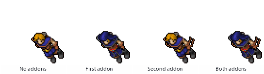

Wiki editors
Ready-to-paste {{Infobox Object}} markup, correctly named images, animated GIFs, item IDs, creature and house data, and a file-link snippet for every image you upload.
Everything Tibia Foundry does, with real screenshots of version 9.0.5 in your language.
Whether you run a wiki, a fansite, a guild page or a YouTube channel, the same chores come back with every client update. Tibia Foundry does them for you.
Ready-to-paste {{Infobox Object}} markup, correctly named images, animated GIFs, item IDs, creature and house data, and a file-link snippet for every image you upload.
Consistent creature, outfit and item galleries, update pages and downloadable resource packs – generated in the format your site uses.
Transparent sprites, sprite sheets, interface artwork and pixel-exact enlargements (nearest-neighbor: no blur, no new colors).
Map images, areas and NPC positions from the client's map data, high-resolution maps for guides and a picture of every house.
Sounds and music of the client, comparison sheets for videos and articles, and the metadata and credits of everything you publish.
Browse every object, outfit, effect, creature and quest of the official client, and keep each client version for history.
23 tools, grouped by task, sharing one client, one library and one set of export rules.
Finds your installed live and test-server clients, loads client folders from anywhere and archives every version space-efficiently – verified file by file and rebuildable later.
Clients · Client Installation Rebuilder · Compatibility
Transparent sprites or whole sprite sheets, every object, outfit, effect and missile, creature and quest data, and the client's sounds and music.
Extract Sprites · Appearances · Static Data · Sounds
Animated GIFs with fansite presets, colored outfits with addons and mounts, creature animations and 1×–8× pixel-exact enlargement.
Appearances (Outfitter) · Advanced Tools
Inspect and edit a copy of the official assets, extract and rebuild Qt resource files, write classic Tibia.dat/.spr copies, edit file metadata.
Assets Editor · RCC Editor · Client Converter · File Metadata
Map images, areas and NPC positions, high-resolution maps for guides, and house images for every house article.
Map Tools · House Images
A searchable library of every image, animation and sound – collections, tags, versions, duplicate detection – with every export added automatically.
Asset Library
Reusable projects that render creature, outfit and item galleries, update resources and wiki images – configured once, run again with every update.
Content Studio
Hundreds of images in one run, in a background queue with progress, cancellation and retry; batch renaming, resizing and conversion scripts.
Content Studio queue · Scripts
Profiles for TibiaWiki, your fansite, galleries, articles or an archive: sizes, formats, names, folders, manifests, credits and snippets.
Publishing profiles · HTML galleries
Select an object in Appearances and open Wiki infobox: Tibia Foundry writes TibiaWiki's {{Infobox Object}} from the official client data, following the template's own parameters and the wiki's conventions. Review it, add what only you know, and paste it into the article.
Your sprites, GIFs, renders, maps, sounds and artwork in one searchable place. Files stay where they are; the library only reads them.
Choose what to make, adjust the steps, pick your site's profile and run it. Tibia Foundry renders, sizes, names, sorts, describes and packages everything in the background.
Pick creatures, outfits, items, a library collection or a folder – with a searchable list of the client's content.
Scale, canvas, alignment, animation, addons, colors, names and folders – or keep the template's defaults.
The queue works in the background while you keep using the app; cancel or retry any job.
Images with your credit embedded, contact sheets, JSON/CSV/Markdown, an HTML gallery and a ZIP.



Every fansite, wiki and CMS wants its images differently. Each profile describes one site, so nothing is forced into someone else's format. The built-in profiles are starting points you can edit.
| Profile | Images | Names and folders | Extras |
|---|---|---|---|
| TibiaWiki | Client size; PNG, animations as GIF | Game names with spaces · {category} | One [[File:…]] link per image, JSON and CSV |
| Custom fansite | Client size; PNG, animations as GIF | dragon-lord.gif · lower case, hyphens | An HTML <img> snippet per image, JSON and CSV |
| Gallery website | 2× on a fixed 128×128 canvas | Lower case, underscores | A self-contained HTML gallery, JSON and CSV |
| Article publishing | Client size; PNG, animations as GIF | dragon-lord.gif · lower case, hyphens | Markdown with a credit line under each image |
| Personal archive | Original size | Game names with spaces · {category} | Every manifest format |
| Your own | Any scale, canvas, padding, background, format | Templates with 22 variables | Your credit line and snippet (wiki, HTML, BBCode…) |
Thumbnails, full-size view, categories, search, metadata and credits, light and dark – one index.html that works from disk or any web host, no server or database.
JSON, CSV (safe for spreadsheets) and Markdown lists of every image with name, ID, category, size, client version and credit – ready for a CMS import.
Every PNG and GIF carries your name as creator and CipSoft's copyright of the artwork. Files made from others' images keep their original creators.
Taken from the program with the official client installed – shown in the theme you are viewing this page in. Click any screenshot to enlarge it.
The client folders are only read. Editors save copies elsewhere, and no tool writes into a client or archive folder.
Exports are written to a temporary place and moved into position only when complete; replaced files can be backed up and restored.
No account, no cloud. TibiaWiki is contacted only by features that need it. Diagnostics reports leave out personal paths, so they are safe to share.